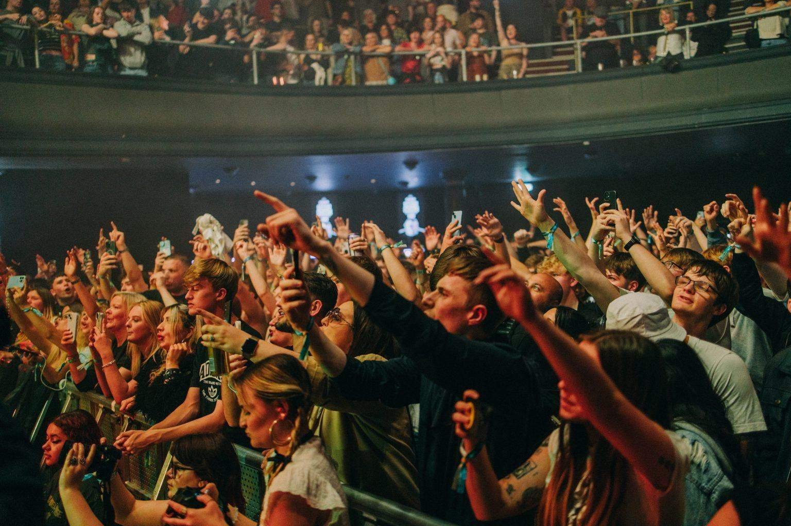

Festivals · Music
Liverpool Sound City 2027
- Dates
- –
- Location
- Liverpool, United Kingdom
- Format
- In-person
- Category
- Music
- Industry
- Music
- Official website
- https://www.soundcity.uk.com/
About
Official site: 1-2 May 2027 across Liverpool city centre independent venues (20th edition); Sound City+ conference 30 April 2027. City-level pin.
Topics: new music, music industry.
No organiser attendance figure found on the official pages checked. Ranked by estimate (estimated size band 5,000-30,000; this band is a research estimate, not an organiser figure).
Sources
- Official — https://www.soundcity.uk.com/